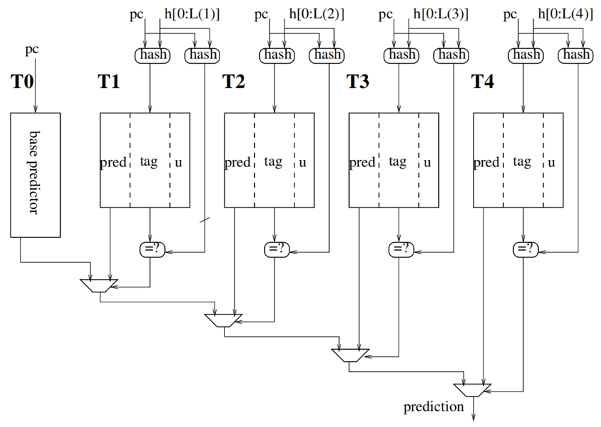

TAGE-SC Branch Predictor
Categories:
Introduction
TAGE-SC is the primary predictor for conditional branches in the Kunming Lake architecture, classified as an Accurate Predictor (APD). TAGE-SC can be seen as two relatively independent components: the prediction part TAGE and the verification part SC.
The Tagged Geometric History Length Predictor (TAGE) utilizes multiple prediction tables with different history lengths to exploit extensive branch history information. TAGE predicts whether a branch instruction will be taken or not taken. It consists of a base prediction table and multiple history tables. It first predicts using multiple history tables. If there is no prediction, it uses the prediction from the base table. The Statistical Corrector (SC) is a statistical corrector. SC references the prediction results of TAGE and statistical bias results. Based on these two results, it corrects the final prediction result.
In Kunming Lake, each prediction block can have up to 2 branch instructions, so TAGE can predict up to 2 conditional branch instructions simultaneously. When accessing the various history tables in TAGE, the starting address of the prediction block is used as the PC, and two prediction results are retrieved based on the same global history.
TAGE Branch Predictor in Kunming Lake
Basic Functionality

The core idea of the TAGE predictor is to provide prediction results with different history lengths and select the most appropriate result for feedback. In the TAGE predictor, there are a total of 1+N history record tables, where N is a configurable option. In Kunming Lake, N=4.
The base predictor based on the T0 table is the baseline predictor. During prediction, it directly looks up the “2-bit saturated counter representing the jump history information” corresponding to the address in the T0 table, and then makes a prediction based on the history information. The T0 table has only 2 bits per entry, so the history states it can record are limited.
For tables other than T0, we use Tn to represent them. During table lookup, in addition to the PC, it is also necessary to use the global jump history information H for the lookup. When a match is found, the prediction is made based on the “3-bit saturated predictor” to jump or not to jump. The higher the value of n for the Tn table, the longer the history information it uses, i.e., x<y.
For each prediction, TAGE selects the table entry with the longest global jump history among all the hit Tn entries.
- If the table entry exists and the prediction result confidence is high, it is used as the final prediction result.
- If the confidence is low, another internal counter is used to determine whether to select that entry or T0 as the final prediction.
To save space, when retrieving the Tn table, the input jump history information H needs to be compressed, a process also known as history folding.
The table entries of each prediction table include the following elements:
- T0 table indexed directly by PC
- 2-bit pred unsigned saturated counter (indicating prediction direction and confidence level)
- Tn table indexed by XOR of PC and folded global history
- 1-bit valid bit
- 3-bit pred unsigned saturated counter
- 8-bit tag (used for verifying whether the hit is intentional, not coincidental)
- 1-bit useful bit for controlling expiration For a prediction block, all tables may generate prediction results, requiring a selection process. Typically, the higher the Tn table number, the higher its priority.
Pipeline
TAGE contains two pipeline stages: the first stage calculates the index, and the second stage reads the results from the SRAM table.
- Stage 0 (s0): Input to the first pipeline stage, usually the pc and folded history. First pipeline stage operation: Calculate the index. Output to s1 via registers.
- Stage 1 (s1): Input to the second pipeline stage, consisting of the index and other calculated data from the first stage. Second pipeline stage operation: Memory access to SRAM, reading the prediction result. Output to s2 via registers.
- Stage 2 (s2): Actual prediction result. TAGE uses 2 stages for prediction, with the prediction result ready for use in the third stage after 2 stages.
Data Structures
-
In Kunming Lake’s implementation, the T0 and Tn table structures are as follows:
-
预测器 作用 表项构成 项数 基准预测器T0 用于在其他预测器的预测结果都无效时输出预测结果 2 bit ctr 饱和计数器最高位决定跳转方向 2路各2048项，每路对于一条分支指令 预测表T1-T4 对每个预测块的输入，所有Tn表都进行预测，在所有预测有效的结果中，选择历史记录最长的结果作为最后预测结果。历史记录长度由输入的H决定 1 bit valid 有效位 3 bit ctr 饱和计数器8 bit tag 校验命中1 bit us 作为usefulness计数器 4096项、奇数项对应第一条分支指令，偶数项对应第二条分支指令
-
For each table Tn, the length of its input “global branch history data H” varies during querying. Assuming the total prediction history length is S, Tn and Tn+1 may use the low x, low y bits of S (the lower bits are the newer history) as query inputs. Generally, the larger the n of table Tn, the longer the history information used, i.e., x<y.
During the query of table Tn, since the historical data H is “compressed,” it may lead to a situation where the result of one PC1^H1 matches another PC2^H2 (similar to a Hash collision), resulting in indexing into invalid data (predicting PC1 indexes to predicted PC2’s data). Therefore, TAGE provides a tag identifier for each table, using an 8-bit tag in the Kunming Lake implementation to reduce the probability of collisions. The calculation method and index method for tags are different; only when the tag calculation is the same, the query result is valid.
In the Tn table entry, in addition to the saturation counter ctr and tag, there is also a 1-bit usefulness counter. When this counter is 0, it is a weak entry, indicating that the entry can be reallocated for other uses; when it is not 0, it is a strong entry, indicating that the entry cannot be reallocated for other uses.
To try to avoid the situation where all table entries are 1 and no new table entries can be allocated, TAGE expects to use the counter bankTickCtrs to clear all usefulness to 0.
Retrieval Method for T0 and Tn Tables
- For table T0, indexing is done using the PC[11:1] bits to index 2048 table entries, so for T0, there is no possibility of not finding a match.
- For table Tn, in addition to PC[11:1], retrieval also requires searching based on the global branch history. In Kunming Lake, the top-level branch predictor maintains a 256-bit global history record GH, which can fold the GH’s most recent n bits of history information based on the required number of bits x for the sub-predictor. That is, n is divided into ceil(x/n) units of length x, and then XOR is performed bitwise. This folded history is denoted as FH (Folded History), and the specific process can be found in the [Branch Folding History section](../00_bpu_top/#Branch Folding History). When the TAGE predictor searches for a table entry in Tn, it uses the index and tag, calculated as follows:
| Calculation Formula |
|---|
| index = FH ^ ((pc»1)低位) |
| tag = FH1 ^ FH2 ^ ((pc»1)低位) |
Where FH, FH1, FH2 represent the folded global branch history according to certain rules. For Tn, FH, FH1, and FH2 each have their own folding bit numbers, which may not be the same. In the Kunming Lake implementation, the configurations of the T0 and Tn tables are as follows:
| 表名称 | FH长度 | FH1长度 | FH2长度 | 最近历史长度（用到GH中的位数） |
|---|---|---|---|---|
| T1 | 8比特 | 8比特 | 7比特 | 低8位，即把最新8位历史，折叠成FH、FH1、FH2 |
| T2 | 11比特 | 8比特 | 7比特 | 低13位，即把最新13位历史，折叠成FH、FH1、FH2 |
| T3 | 11比特 | 8比特 | 7比特 | 低32位，即把最新32位历史，折叠成FH、FH1、FH2 |
| T4 | 11比特 | 8比特 | 7比特 | 低119位，即把最新119位历史，折叠成FH、FH1、FH2 |
Note: pc»1 is used because RISC-C extension is used, with 2-byte alignment, and PC itself is already aligned to 1 byte, so only 1 bit is used.
Alternative Predictor
Since the Tn table uses saturation counters for prediction, there may be situations where the output result is “not confident.” For example, in Kunming Lake, for a 3-bit saturation counter, both 100 and 011 indicate a weak prediction. To provide more choices as references for this state, the TAGE predictor also provides an “alternative predictor” mechanism, which determines whether to select the prediction result of Tn or T0 when the Tn table predicts with low confidence.
In the Kunming Lake implementation, the “alternative predictor” is implemented based on the register group useAltOnNaCtrs. It consists of two paths of 128 4-bit saturation counters each, initialized to 0b1000. When TAGE makes a prediction, it uses PC(7,1) to index the corresponding saturation counter. If the value of this counter is greater than or equal to the preset value and the prediction result of Tn is not confident, it selects the result of T0; otherwise, it selects the result of Tn.
Prediction Process
In summary, the prediction steps of the TAGE predictor in Kunming Lake are as follows:
- Parallel indexing of T0 and Tn tables, selecting which table to use based on the hit result:
- If a match to the tag of a Tn table is found, the potential prediction result is given by the saturation counter of the longest history Tn table.
- If no match to a Tn table is found, the final prediction result is given by the saturation counter of the T0 table.
- If the potential prediction result of the matched Tn table is a weak prediction (100,011), and the value of the corresponding 4-bit counter in the alternative prediction for PC is greater than or equal to a threshold, the result of the T0 table is used as the final result; otherwise, the prediction result of the Tn table is used as the final prediction result.
Training Process
Since the prediction process of TAGE involves many counters and tags, they need to be updated according to certain rules, a process known as training. This training process occurs in the BPU’s update stage, where the PC, branch history, and prediction correctness information are input. The training process for branch prediction in Kunming Lake is divided into several steps based on different conditions:
- Update when T0 is the final prediction result: If a jump occurs (i.e., taken), increment the ctr saturation counter indexed by the pc; otherwise, decrement it.
- When only T0 is hit, the following operations are performed:
- If T0 is predicted correctly, no additional update is performed.
- If T0 is predicted incorrectly, attempt to randomly allocate a new table entry in a Tn table. To allocate a new table entry, the original entry’s usefulness at the corresponding index must be 0. The new entry is initialized as a weak prediction with usefulness 0, and its tag is set to the newly calculated tag.
- When both T0 and Tn are hit, the following operations are performed:
- Tn is always updated: If a jump occurs, increment the ctr saturation counter indexed by the pc; otherwise, decrement it. It is important to note that “hit” means that the tag of the indexed entry matches the calculated tag.
- If T0 and Tn produce the same result:
- If predicted correctly, no additional update is performed.
- If predicted incorrectly, attempt to allocate a new table entry in a table with a longer history than Tn. To allocate a new entry, the usefulness of the original entry at the corresponding index must be 0. The new entry is initialized as a weak prediction with usefulness 0, and its tag is set to the tag calculated using the new history information.
- If T0 and Tn produce different results:
- If Tn is correct, the entry’s usefulness is incremented.
- If the result is still a weak prediction, the counter in the alternative prediction for T0 is decremented.
- If Tn is incorrect, the entry’s usefulness is decremented, and a new entry is allocated in a table with a longer history than Tn, as in 3.2.2.
- If the result is still a weak prediction, the counter in the alternative prediction for T0 is incremented.
- If Tn is correct, the entry’s usefulness is incremented.
- When a new table needs to be allocated, dynamic reset of the usefulness flag is performed.
- Using a 7-bit bankTickCtrs register and calculating:
- The number of allocatable tables a (with a longer history length than the current and corresponding index usefulness is 0)
- The number of unallocatable tables b (with a longer history length than the current and corresponding index usefulness is not 0)
- Update bankTickCtrs += Δ (saturated counter), Δ = b - a,
- When bankTickCtrs reaches its maximum value, reset all usefulness to 0.
- Using a 7-bit bankTickCtrs register and calculating:
Kunming Lake SC Branch Predictor
Basic Function Introduction
The SC (Statistics counter) branch predictor is a branch predictor based on historical statistical information. Similar to TAGE, SC typically has multiple tables Tn, each corresponding to different lengths of historical jump statistics. The difference is that in SC, when predicting based on the PC, each table Tn is accessed, and then SC adds up each hit table entry to calculate the total “saturated counter” jump information, and finally determines whether to jump based on the total jump information. Generally, SC uses “signed saturated counters”, where a counter value greater than 0 indicates a jump, and less than 0 indicates no jump. The larger the absolute value of the counter, the higher the prediction confidence.
In the SC predictor, SC is also composed of multiple tables (e.g., T1, T2, T3, T4), but with fewer basic prediction tables T0 compared to the TAGE predictor. The Tn tables in SC have 6-bit signed saturated counters. The indexing method for SC tables is as follows:
| Calculation Method |
|---|
| Index = (FH) ^ ((pc»1)低位) |
For each table, the number of entries and the folded history length used are as follows:
| Table | Number of Entries | FH Length | Folded History Range |
|---|---|---|---|
| T1 | 512 | 0 | 不折叠 |
| T2 | 512 | 4 | 把历史信息的低4位，折叠成FH |
| T3 | 512 | 8 | 把历史信息的低10位，折叠成FH |
| T4 | 512 | 8 | 把历史信息的低16位，折叠成FH |
The formula for calculating the total statistical prediction result is as follows:
Where ctr_sc represents the signed saturated counter for each table. Left-shifting and adding one is for weight adjustment. The accumulated scCtrSum is the final prediction result of SC. If this value is greater than zero, the prediction is a jump; if it is less than zero, the prediction is no jump. The larger the absolute value, the higher the prediction confidence.
Typical data conversion results are as follows (extended to 9 bits to prevent overflow during calculation):
- All are 6b100000 (strong no-jump), resulting in 9b100000100, with a value of -252.
- All are 6b011111 (strong jump), resulting in 9b011111100, with a value of 252.
- All are 6b000000 (weak jump), resulting in 9b000000100, with a value of 4.
- All are 6b111111 (weak no-jump), resulting in 9b111111100, with a value of -4.
Prediction Process
- Calculate the index of table Tn using the PC and historical information.
- Query the index to obtain the saturation counters for all tables.
- Sum up all the saturation counters obtained from all tables to get the final prediction result (take a jump for values greater than 0, no jump for values less than 0).
Training Process
Update the saturation counters during the update phase.
- If the real instruction corresponding to PC jumps, increment the saturation counters corresponding to all tables.
- If the real instruction corresponding to PC does not jump, decrement the saturation counters corresponding to all tables.
Kunming Lake TAGE-SC Branch Predictor
Why SC is Needed with TAGE
In some applications, some branch behaviors have a weak correlation with branch history or paths, showing a statistical prediction bias. For these branches, using counters to capture statistical biases is more effective than history-based branch prediction.
TAGE is very effective in predicting branches that are highly correlated with history, but it performs poorly for branches with statistical biases. For example, branches that have a small bias in one direction but are not strongly correlated with historical paths. To avoid this problem, an SC predictor can be added to the traditional TAGE predictor.
TAGE-SC Functionality
In the Kunming Lake TAGE-SC predictor, both the TAGE and SC prediction results P1 and P2 are obtained simultaneously, and then their results are accumulated P = P1 + P2. If the absolute value of P is greater than the 8-bit threshold sc_bank_thres, the predictor result P is used; otherwise, P1 is used as the final prediction result.
For dynamic adaptation, the threshold sc_thres needs to be dynamically changed. Therefore, in the implementation, TAGE-SC uses a 5-bit sc_bank_ctr counter to adjust the threshold sc_bank_thres. Additionally, since Kunming Lake supports the simultaneous prediction of 2 branch instructions, the threshold register and corresponding control counter are also duplicated.
Pipeline
The TAGE-SC predictor contains 3 pipeline stages, where the 2-stage pipeline of TAGE has been introduced, and the pipeline of the SC part is as follows:
-
Stage 0: Read PC and folded history into s0. First Stage: Calculate the index from pc and FH to obtain s0_idx.
-
Stage 1: Read s0_idx from s0. Second Stage: Find the counter data corresponding to s1_idx in SCTable and output to s1_scResps.
-
Stage 2: Read s1_scResps from s1. Third Stage: Select whether to invert the prediction result based on s2_scResps and output to s2_disagree.
-
Stage 3: Read the result from s2_disagree as s3_disagree.
Prediction Process
In TAGE-SC prediction, the prediction result P1 of TAGE is represented by tage_ctr, and the prediction result P2 of SC is represented by scCtrSum. The prediction is divided into four steps:
-
Execute the SC predictor to get the prediction result scCtrSum.
-
Simultaneously obtain the prediction result tage_ctr of the TAGE predictor.
-
Since the prediction result of TAGE is an unsigned saturation counter, and the prediction result of SC is a signed saturation counter, if they are added together, data conversion is required.
-
Kunming Lake adopts a conversion for the result of TAGE. The converted result is represented by tageCtrCentered, and the specific conversion process is as follows:
$$tageCtrCentered=((((ctr_{tage} -4)<<1)+1)<<3) $$ -
Conversion of a 3-bit unsigned saturation counter to an 8-bit signed saturation counter result is illustrated as follows:
-
3b100 Weak jump => 8b00001000 = 8
-
3b011 Weak non-jump => 8b11111000 = -8
-
3b111 Strong jump => 8b00111000 = 56
-
3b000 Strong non-jump => 8b11001000 = -56
-
-
-
Add the prediction results of TAGE and SC to get the final prediction result P, represented by totalSum.
-
Determine the final prediction direction based on
totalSumandsc_bank_thres- Jump if totalSum > 0 and its absolute value exceeds the threshold: If scCtrSum > sc_bank_thres - tageCtrCentered, it can also be understood as totalSum > sc_bank_thres. The above expression can reduce the maximum bit width (ensuring no overflow requires 10 bits to become 9 bits).
- No jump if totalSum < 0 and its absolute value exceeds the threshold: If scCtrSum < -sc_bank_thres - tageCtrCentered, it can also be understood as |totalSum| > sc_bank_thres.
Training Process
After combining TAGE and SC, TAGE-SC adds an sc_bank_ctr counter to control the threshold sc_bank_thres. Therefore, during training, in addition to the training of TAGE and SC themselves, the newly added counter needs to be updated.
During the update phase, the specific update process is as follows:
- TAGE-SC uses the prediction result P (i.e., the prediction result after TAGE + SC). If |totalSum| is in the range [sc_bank_thres -4, sc_bank_thres -2], update the threshold-related register group.
- Update sc_bank_ctr, the saturation counter: If the prediction is correct, sc_bank_ctr +=1; if the prediction is incorrect, sc_bank_ctr -=1.
- Update sc_bank_thres, limited saturation operation: If the updated value of sc_bank_ctr reaches 0b11111 and sc_bank_thres <= 31, then sc_bank_thres +=2; if the updated value of sc_bank_ctr is 0 and sc_bank_thres >=6, then sc_bank_thres -=2. For all other cases, thres remains unchanged.
- After the update judgment of sc_bank_thres is completed, another judgment is made on sc_bank_ctr. If the updated sc_bank_ctr is 0b11111 or 0, thres_ctr is reset to the initial value 0b10000.
- TAGE-SC uses the prediction result P1 (i.e., the prediction result of TAGE) and does not perform any operations.
Interface List
TageSC
| 信号类型 | 信号宽度 | 信号名 | 信号描述 |
|---|---|---|---|
| input | * | clock | |
| input | * | reset | |
| input | *[35:0] | io_reset_vector | 用于reset时，reset s1_pc_dup_0 提供的值 |
| input | *[40:0] | io_in_bits_s0_pc_0 | 复制的s0_pc的dup数组的第1个，给顶层BPU的PC |
| input | *[40:0] | io_in_bits_s0_pc_1 | 复制的s0_pc第2个，给Tage的PC |
| input | *[40:0] | io_in_bits_s0_pc_3 | 复制的s0_pc的第4个，给SC的PC |
| input | *[10:0] | io_in_bits_folded_hist_1_hist_17_folded_hist | TageTable 2 用到的11bits 折叠历史 从多长历史范围折叠到11bit见前文所述的表 注意TageTable下标+1，此处 T2 是前文 T3 |
| input | *[10:0] | io_in_bits_folded_hist_1_hist_16_folded_hist | TageTable 3 用到的11bits 折叠历史 |
| input | *[6:0] | io_in_bits_folded_hist_1_hist_15_folded_hist | TageTable 1 用到的7bits 折叠历史 |
| input | *[7:0] | io_in_bits_folded_hist_1_hist_14_folded_hist | TageTable 0 用到的8bits 折叠历史 |
| input | *[6:0] | io_in_bits_folded_hist_1_hist_9_folded_hist | TageTable 2 用到的7bits 折叠历史 |
| input | *[7:0] | io_in_bits_folded_hist_1_hist_8_folded_hist | TageTable 3 用到的8bits 折叠历史 |
| input | *[6:0] | io_in_bits_folded_hist_1_hist_7_folded_hist | TageTable 0 用到的7bits 折叠历史 |
| input | *[6:0] | io_in_bits_folded_hist_1_hist_5_folded_hist | TageTable 3 用到的7bits 折叠历史 |
| input | *[7:0] | io_in_bits_folded_hist_1_hist_4_folded_hist | TageTable 1 用到的8bits 折叠历史 |
| input | *[7:0] | io_in_bits_folded_hist_1_hist_3_folded_hist | TageTable 2 用到的8bits 折叠历史 |
| input | *[10:0] | io_in_bits_folded_hist_1_hist_1_folded_hist | TageTable 1 用到的11bits 折叠历史 |
| input | *[3:0] | io_in_bits_folded_hist_3_hist_12_folded_hist | SCTable 1 用到的 4bit 折叠历史 |
| input | *[7:0] | io_in_bits_folded_hist_3_hist_11_folded_hist | SCTable 2 用到的 8bit 折叠历史 |
| input | *[7:0] | io_in_bits_folded_hist_3_hist_2_folded_hist | SCTable 3 用到的 8bit 折叠历史 |
| output | * | io_out_s2_full_pred_0_br_taken_mask_0 | io_out_s2_full_pred_{i}br_taken_mask{j} Tage 在 s2流水级输出的，复制4份 预测块中第 j 条分支指令TAGE预测结果 这里不该叫mask吧 |
| output | * | io_out_s2_full_pred_0_br_taken_mask_1 | |
| output | * | io_out_s2_full_pred_1_br_taken_mask_0 | |
| output | * | io_out_s2_full_pred_1_br_taken_mask_1 | |
| output | * | io_out_s2_full_pred_2_br_taken_mask_0 | |
| output | * | io_out_s2_full_pred_2_br_taken_mask_1 | |
| output | * | io_out_s2_full_pred_3_br_taken_mask_0 | |
| output | * | io_out_s2_full_pred_3_br_taken_mask_1 | |
| output | * | io_out_s3_full_pred_0_br_taken_mask_0 | io_out_s3_full_pred_{i}br_taken_mask{j} Tage 在 s3流水级输出的，复制4份 预测块中第 j 条分支指令SC预测结果 |
| output | * | io_out_s3_full_pred_0_br_taken_mask_1 | |
| output | * | io_out_s3_full_pred_1_br_taken_mask_0 | |
| output | * | io_out_s3_full_pred_1_br_taken_mask_1 | |
| output | * | io_out_s3_full_pred_2_br_taken_mask_0 | |
| output | * | io_out_s3_full_pred_2_br_taken_mask_1 | |
| output | * | io_out_s3_full_pred_3_br_taken_mask_0 | |
| output | * | io_out_s3_full_pred_3_br_taken_mask_1 | |
| output | *[222:0] | io_out_last_stage_meta | 见附表 |
| input | * | io_ctrl_tage_enable | |
| input | * | io_ctrl_sc_enable | |
| input | * | io_s0_fire_0 | s0 阶段流水线控制 相同信号复制多份，0给BPU，1给Tage，3给SC |
| input | * | io_s0_fire_1 | |
| input | * | io_s0_fire_3 | |
| input | * | io_s1_fire_0 | s1 阶段流水线控制 |
| input | * | io_s1_fire_1 | |
| input | * | io_s1_fire_2 | |
| input | * | io_s1_fire_3 | |
| input | * | io_s2_fire_0 | s2 阶段流水线控制 |
| input | * | io_s2_fire_1 | |
| input | * | io_s2_fire_2 | |
| input | * | io_s2_fire_3 | |
| output | * | io_s1_ready | tage的所有表，可以执行读取结果的操作 |
| input | * | io_update_valid | 从FTQ发向BPU的后端执行结果（更新信号）是否有效 |
| input | *[40:0] | io_update_bits_pc | （后端执行过的）预测块的PC |
| input | *[10:0] | io_update_bits_spec_info_folded_hist_hist_17_folded_hist | TageTable 2 用到的11bits 折叠历史 预测时使用的分支历史结果，没有更新，转了一圈回来了 |
| input | *[10:0] | io_update_bits_spec_info_folded_hist_hist_16_folded_hist | TageTable 3 用到的11bits 折叠历史 |
| input | *[6:0] | io_update_bits_spec_info_folded_hist_hist_15_folded_hist | TageTable 1 用到的7bits 折叠历史 |
| input | *[7:0] | io_update_bits_spec_info_folded_hist_hist_14_folded_hist | TageTable 0 用到的8bits 折叠历史 |
| input | *[3:0] | io_update_bits_spec_info_folded_hist_hist_12_folded_hist | SCTable 1 用到的 4bit 折叠历史 |
| input | *[7:0] | io_update_bits_spec_info_folded_hist_hist_11_folded_hist | SCTable 2 用到的 8bit 折叠历史 |
| input | *[6:0] | io_update_bits_spec_info_folded_hist_hist_9_folded_hist | TageTable 2 用到的7bits 折叠历史 |
| input | *[7:0] | io_update_bits_spec_info_folded_hist_hist_8_folded_hist | TageTable 3 用到的8bits 折叠历史 |
| input | *[6:0] | io_update_bits_spec_info_folded_hist_hist_7_folded_hist | TageTable 0 用到的7bits 折叠历史 |
| input | *[6:0] | io_update_bits_spec_info_folded_hist_hist_5_folded_hist | TageTable 3 用到的7bits 折叠历史 |
| input | *[7:0] | io_update_bits_spec_info_folded_hist_hist_4_folded_hist | TageTable 1 用到的8bits 折叠历史 |
| input | *[7:0] | io_update_bits_spec_info_folded_hist_hist_3_folded_hist | TageTable 2 用到的8bits 折叠历史 |
| input | *[7:0] | io_update_bits_spec_info_folded_hist_hist_2_folded_hist | SCTable 3 用到的 8bit 折叠历史 |
| input | *[10:0] | io_update_bits_spec_info_folded_hist_hist_1_folded_hist | TageTable 1 用到的11bits 折叠历史 |
| input | * | io_update_bits_ftb_entry_brSlots_0_valid | FTB 表项的第一个slot是否有效（存储了跳转指令） |
| input | * | io_update_bits_ftb_entry_tailSlot_sharing | FTB 表项的最后一个slot是否存储了条件分支而非无条件跳转 |
| input | * | io_update_bits_ftb_entry_tailSlot_valid | FTB 表项的最后一个slot是否有效 |
| input | * | io_update_bits_ftb_entry_always_taken_0 | 历史上slot 0 指令总是跳转 |
| input | * | io_update_bits_ftb_entry_always_taken_1 | 历史上slot 1 指令总是跳转 |
| input | * | io_update_bits_br_taken_mask_0 | solt 0 是否 taken |
| input | * | io_update_bits_br_taken_mask_1 | solt 1 是否 taken |
| input | * | io_update_bits_mispred_mask_0 | solt 0 是否预测正确 |
| input | * | io_update_bits_mispred_mask_1 | solt 1 是否预测正确 |
| input | *[222:0] | io_update_bits_meta | 见附表 |
io_out_last_stage_meta
需要设计参与优化！
| 信号类型 | 信号位 | 信号名 | 信号描述 |
|---|---|---|---|
| output | [218:88] | 0 | 占位，全为0，传递到composer时会忽略 |
| 87 | resp_meta_providers_1_valid_r | ||
| [86:85] | resp_meta_providers_1_bits_r | ||
| 84 | resp_meta_providers_0_valid_r | ||
| [83:82] | resp_meta_providers_0_bits_r | ||
| [81:79] | resp_meta_providerResps_1_r_ctr | ||
| 78 | resp_meta_providerResps_1_r_u | ||
| 77 | resp_meta_providerResps_1_r_unconf | ||
| [76:74] | resp_meta_providerResps_0_r_ctr | ||
| 73 | resp_meta_providerResps_0_r_u | ||
| 72 | resp_meta_providerResps_0_r_unconf | ||
| 71 | resp_meta_altUsed_1_r | ||
| 70 | resp_meta_altUsed_0_r | ||
| 69 | resp_meta_altDiffers_1_r | ||
| 68 | resp_meta_altDiffers_0_r | ||
| [67:66] | resp_meta_basecnts_1_r | ||
| [65:64] | resp_meta_basecnts_0_r | ||
| [63:60] | resp_meta_allocates_1_r | ||
| [59:56] | resp_meta_allocates_0_r | ||
| 55 | resp_meta_takens_1_r | ||
| 54 | resp_meta_takens_0_r | ||
| 53 | resp_meta_scMeta_tageTakens_1_r | ||
| 52 | resp_meta_scMeta_tageTakens_0_r | ||
| 51 | resp_meta_scMeta_scUsed_1_r | ||
| 50 | resp_meta_scMeta_scUsed_0_r | ||
| 49 | resp_meta_scMeta_scPreds_1_r | ||
| 48 | resp_meta_scMeta_scPreds_0_r | ||
| [47:42] | r_1_3 | scMeta(预测时的状态)中第2路的第4个sc_ctr的值 | |
| [41:36] | r_1_2 | scMeta中第2路的第3个sc_ctr的值 | |
| [35:30] | r_1_1 | scMeta中第2路的第2个sc_ctr的值 | |
| [29:24] | r_1_0 | scMeta中第2路的第1个sc_ctr的值 | |
| [23:18] | r_3 | scMeta中第1路的第4个sc_ctr的值 | |
| [17:12] | r_2 | scMeta中第1路的第3个sc_ctr的值 | |
| [11:6] | r_1 | scMeta中第1路的第2个sc_ctr的值 | |
| [5:0] | r_0 | scMeta中第1路的第1个sc_ctr的值 |
io_update_bits_meta
| 信号类型 | 信号位 | 信号名 | 信号描述 |
|---|---|---|---|
| input | [218:94] | FTB, ITAGE, RAS 模块传给 FTQ 的 META 信息，忽略 | |
| [93:6] | io_out_last_stage_meta[87:0] 偏移 6bit 后的结果 | TAGE 输出给 FTQ 的 META | |
| [5:0] | uFTB 输出给 FTQ 的 META |